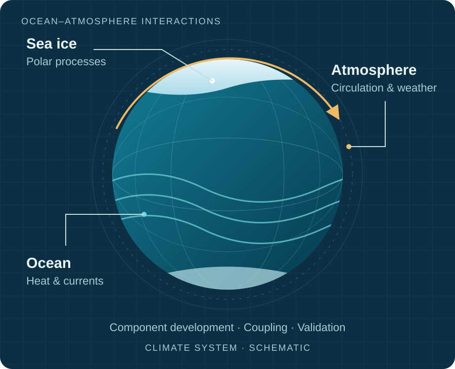
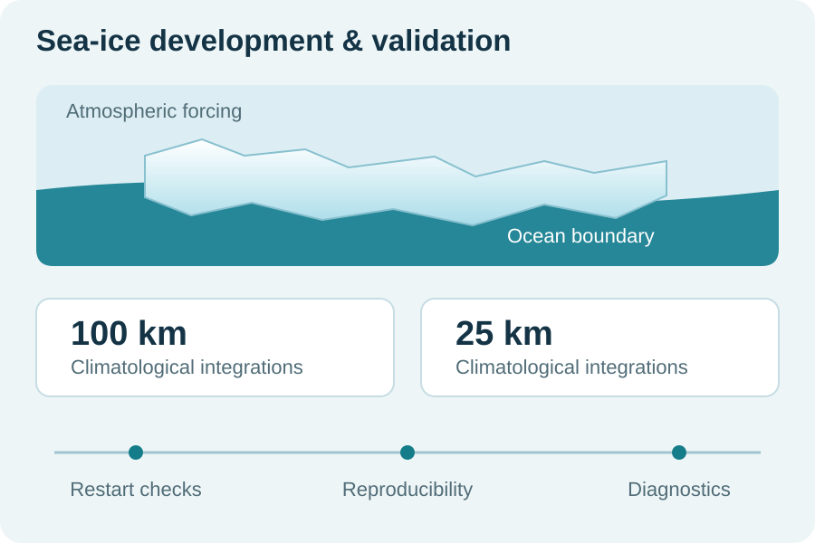

01 / Earth-system modelling
Earth-system
model development.
UFS and FV3/GFS v16 integration planning, CICE6 development, and coupled-model preparation on IITM HPC.
Models & developmentRahul Raghudhas · Climate Scientist
I study how ocean–atmosphere interactions influence monsoons and tropical cyclones. At IITM Pune, I work on coupled climate models and climate predictability.
Project Scientist-I IITM, Pune, India

What I work on
My research focuses on climate-model development, Pacific–monsoon teleconnections and tropical-cyclone activity.
01 / Earth-system modelling
UFS and FV3/GFS v16 integration planning, CICE6 development, and coupled-model preparation on IITM HPC.
Models & development02 / Pacific–monsoon links
North Pacific forcing, PDO-like variability, and the pathways that connect Pacific conditions with the Indian monsoon.
Climate teleconnections03 / Tropical climate
MJO, the Indo-Pacific warm pool, monsoon–cyclogenesis links, and machine learning for climate predictability.
Dynamics & climate AIModel development in practice
I configure and test climate-model components on IITM’s high-performance computing systems.

Selected publications
DEEP LEARNING · MONSOON · CYCLOGENESIS
Earth Systems and Environment
CO-AUTHORED · COLD WAKES · ARABIAN SEA
Journal of Operational Oceanography · 16(3), 236–251 · Online 2022
MJO · TROPICAL CYCLONES · NORTH INDIAN OCEAN
Atmospheric Research · 265, 105880
Research & collaboration
Earth-system modelling, tropical climate, and data-driven predictability.